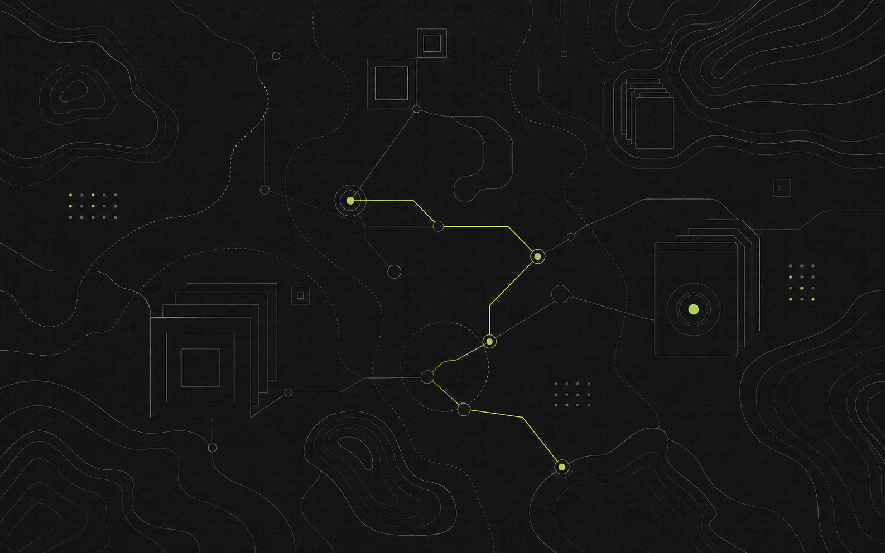

Local-first knowledge infrastructure
Your notes remain plain Markdown. Knowlery adds structure, retrieval, and agent access without taking ownership of the source.
Brand identity system
A local-first knowledge system for people and agents, expressed as a living atlas instead of another AI assistant.

The existing chef-and-pot mark communicates care, but not the product's strongest qualities: deterministic retrieval, inspectable structure, and one knowledge layer shared across agents.
Your notes remain plain Markdown. Knowlery adds structure, retrieval, and agent access without taking ownership of the source.
Technical enough to earn developer trust, warm enough to feel like a place where knowledge accumulates over time.
No chatbot face, neural cloud, sparkle, or AI glow. The visual metaphor is navigation through a maintained body of knowledge.
Each route begins with the same product truth, but only Atlas Fold balances small-size recognition, developer credibility, and a broader story.
Logo system
Use the horizontal lockup for owned brand surfaces and the mark alone for app icons, favicons, avatars, and compact product chrome.
Keep one node diameter around the mark and one mark width around the full lockup.
Use the mark at 16 px and above. Use the lockup at 112 px wide and above.
The route may use Knowledge Lime. Every remaining stroke stays graphite or paper.
Do not rotate, outline, glow, add gradients, or place the mark inside an extra badge.
Graphite and paper carry the system. Knowledge Lime appears only where a route, action, or selected state needs attention.
Knowledge stays legible.
source: plain-markdown
retrieval: deterministic
verdict: no-confident-match
The voice is confident because the product is inspectable. It avoids inflated intelligence claims and makes ownership, boundaries, and outcomes explicit.
The knowledge base your agents can live in.
A local-first knowledge system for people and agents.
Keep your notes yours. Give every agent a structured place to remember, retrieve, and act.
Plain Markdown in. Traceable knowledge out.
Name the action, the boundary, and the result. Prefer “searches locally” to “private by design.”
Never manufacture urgency. Let reliability, citations, and explicit review gates carry trust.
Agents are collaborators, not magic. Write for the person who remains responsible for the knowledge.
Contours show context, routes show retrieval, and indexed folios show durable knowledge. Each element has a job.
Use thin neutral lines to imply the shape of a larger knowledge space.
Use one lime path to show an active query, connection, or decision.
Use stacked rectangular outlines for compiled pages, bundles, and source history.
The lime accent communicates action or selection. It never becomes decoration, and every interaction remains legible without color alone.
Skeletons match the final content shape. No generic spinner.
This is an honest retrieval verdict. Offer nearby pages without inventing an answer.
Explain which compiled page is stale and provide the exact review action.
Brand applications
Every surface changes density, but the same mark, typography, palette, and language keep Knowlery recognizable.
These SVG files are design drafts. Convert the approved wordmark to outlines before production distribution.
{kind=link}
{kind=link}
{kind=link}
{kind=link}
{kind=link}
{kind=link}